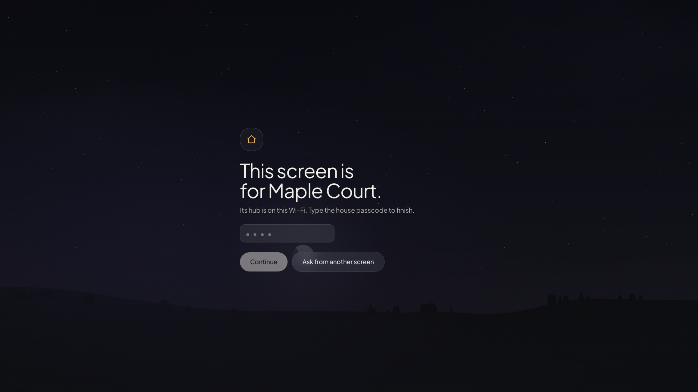

↻Upside down? Tap to turn it
Nothing to tap. A TV has no glass to touch, and it is never hung upside down.
The passcode wants digits, and today the remote's number buttons are switched off, so 1 to 4 can't start a scene by accident. Only a keyboard can type it.
Nothing is lit. The remote's arrows and OK move nothing here, and the words are a footnote from three meters.
On the TV plugged into the hub, the hub already knows this screen is its own (it shows that screen its Wi-Fi password), and still asks.